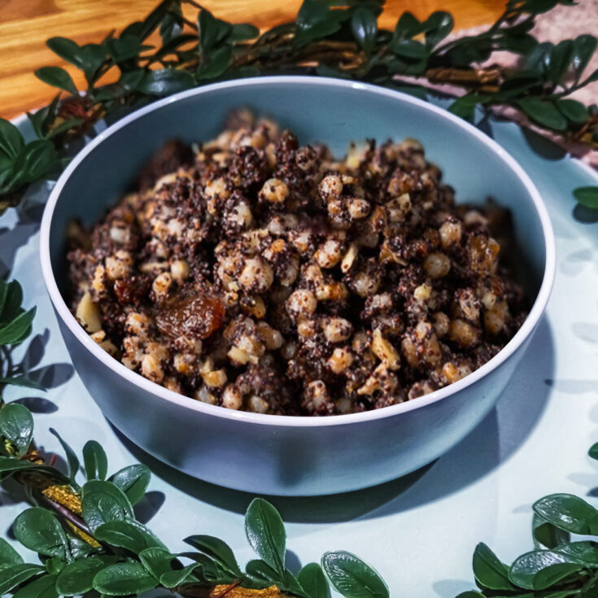

Ukrainian wheat berry pudding kutia

Description
Ingredients
- 1 cup wheat berries
- 6 cups water
- 1 pinch salt
- ½ cup poppy seeds
- 1 cup honey
- ½ cup chopped walnuts
Steps
- Wash wheat well. Place in a heavy pot, add water, and soak for 8
hours, or overnight. Do not drain.
- Sprinkle salt into wheat berries. Bring to a boil; skimming the top as needed.
Turn the heat to low, cover, and simmer until berries pop open, 4 to 5 hours,
stirring occasionally.
- Wash the poppy seeds. Scald and simmer for 5 minutes. Drain.
- Transfer to a coffee grinder and grind well.
- Combine poppy seeds, honey, and 1 cup of boiling water. Stir into wheat.
Cool, about 5 minutes. Add walnuts before serving.